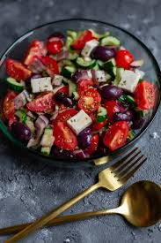
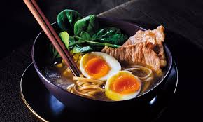
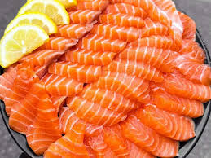
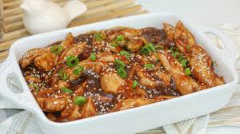
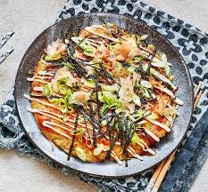

Salada Grega Clássica
Uma salada leve, saudável e cheia de sabor, perfeita para os dias quentes de verão. Rápida e fácil de preparar.

Sushi Tradicional
Deliciosos sushi frescos, feitos com arroz temperado e peixe fresco.

Ramen Japonês
Sopa quente e reconfortante com macarrão, caldo saboroso e vegetais.

Tempura
Legumes e frutos do mar empanados e fritos até ficarem crocantes.
Gyoza
Deliciosos pasteizinhos japoneses recheados e dourados na frigideira.

Sashimi
Fatias finas de peixe cru, frescas e servidas com molho de soja e wasabi.

Frango Teriyaki
Frango suculento com molho teriyaki doce e servido com arroz.

Okonomiyaki
Panqueca japonesa salgada, recheada e coberta com molhos deliciosos.
Sopa Miso
Sopa tradicional japonesa com pasta de miso, tofu e algas.